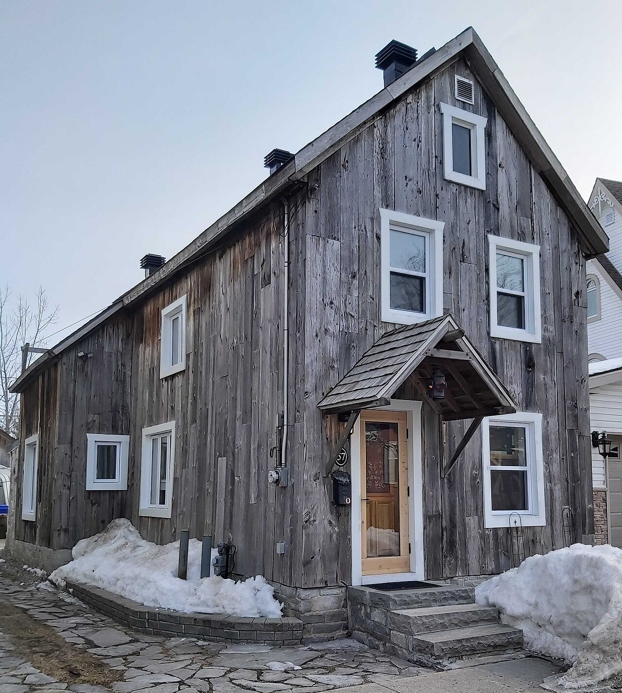

| Place | Local name | Phase years | Storeys | Roof | Window | Cladding | Garage |
|---|---|---|---|---|---|---|---|
| Gatineau | One-and-a-half-storey wooden matchstick house (maison allumette en bois d'un étage et demi) La maison allumette en bois d'un étage et demi | 1850 – 1900 | 1.5 | gabled | vertical | wood-clapboard, wood-board-vertical | – |
| Gatineau | Wood matchstick house of two to two and a half storeys (maison allumette en bois de deux à deux étages et demi) La maison allumette en bois de deux à deux étages et demi | 1850 – 1900 | 2–2.5 | gabled | vertical | wood-clapboard, wood-board-vertical | – |
| Gatineau | Brick matchbox house, two to two and a half storeys (maison allumette en brique de deux à deux étages et demi) La maison allumette en brique de deux à deux étages et demi | 1900 – 1925 | 2–2.5 | gabled | vertical | clay-brick-red | – |
